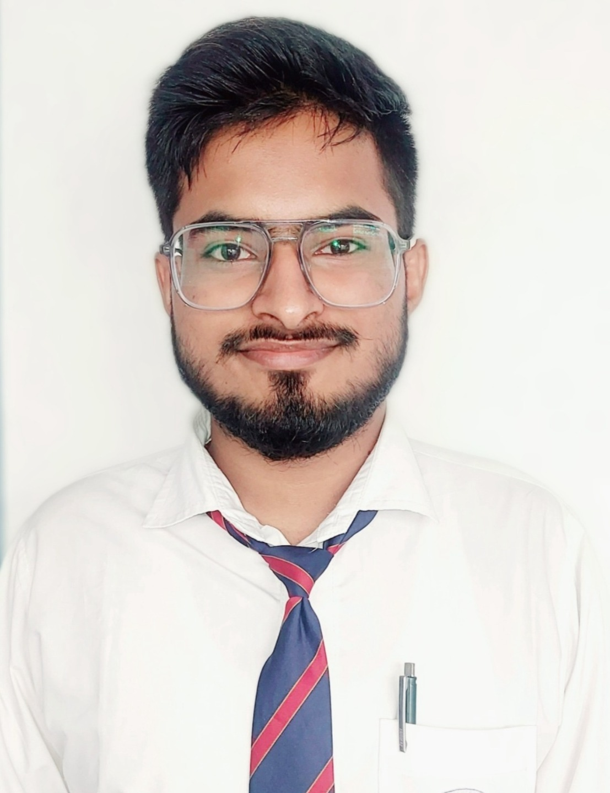

DEEPAK KUMAR
DEEPAK KUMAR
WEB DEVELOPER
STUDENT AT DR.B.C ROY ENGINEERING COLLEGE
DURGAPUR, WEST BENGAL, INDIA
I AM CURRENTLY PUSUING BTECH FROM DR BC ROY ENGINERING COLLEGE DURGAPUR
THIS IS MY PROFILE WITH ALL MY EDUCATIONAL AND WORKING DETAILS
|
 |
ABOUT ME
I AM A HIGHLY MOTIVATED AND DEDICATED 2ND YEAR ENGINEERING STUDENT AT DR. BC ROY ENGINEERING COLLEGE IN DURGAPUR WITH A PASSION FOR INNOVATION AND PROBLEM-SOLVING, I AM PURSUING A DEGREE IN ENGINEERING TO GAIN A STRONG FOUNDATION IN THE FIELD AND MAKE A POSITIVE IMPACT ON THE WORLD.THROUGHOUT MY ACADEMIC JOURNEY, I HAVE DEMONSTRATED A STRONG APTITUDE FOR TECHNICAL SUBJECTS, CONSISTENTLY ACHIEVING EXCELLENT GRADES IN CORE ENGINEERING COURSES. I HAVE ACTIVELY ENGAGED IN PRACTICAL PROJECTS AND HANDS-ON ACTIVITIES, ALLOWING ME TO APPLY THEORETICAL KNOWLEDGE TO REAL-WORLD SCENARIOS. THESE EXPERIENCES HAVE ENHIANCED MY CRITICAL THINKING, ANALYTICAL SKILLS, AND ABILITY TO WORK COLLABORATIVELY IN TEAMS.
BEYOND THE CLASSROOM, I ACTIVELY SEEK OPPORTUNITIES TO EXPAND MY HORIZONS AND GAIN PRACTICAL INDUSTRY EXPOSURE. I HAVE PARTICIPATED IN VARIOUS WORKSHOPS AND SEMINARS, FURTHERING MY UNDERSTANDING OF EMERGING TECHNOLOGIES AND THEIR APPLICATIONS. ADDITIONALLY, I HAVE BEEN AN ACTIVE MEMBER OF ENGINEERING CLUBS AND SOCIETIES, WHERE I HAVE HONED MY LEADERSHIP AND COMMUNICATION SKILLS.
TO COMPLEMENT MY ACADEMIC PURSUITS, I AM AN AVID LEARNER AND KEEP MYSELF UPDATED WITH THE LATEST TRENDS AND ADVANCEMENTS IN THE ENGINEERING FIELD. I BELIEVE IN LIFELONG LEARNING AND CONSTANTLY SEEK WAYS TO ENHANCE MY SKILL SET.
AS I PROGRESS IN MY ENGINEERING JOURNEY, I AM EAGER TO TAKE ON CHALLENGING INTERNSHIPS AND PROJECTS THAT ALLOW ME TO APPLY MY KNOWLEDGE IN A PRACTICAL SETTING. I AM CONFIDENT THAT MY STRONG TECHNICAL BACKGROUND, COUPLED WITH MY PASSION FOR INNOVATION, WILL ENABLE ME TO CONTRIBUTE EFFECTIVELY TO THE ENGINEERING INDUSTRY IN THE FUTURE.
CONNECT WITH ME TO DISCUSS OPPORTUNITIES, COLLABORATIONS, OR TO EXPLORE HOW WE CAN WORK TOGETHER TO DRIVE POSITIVE CHANGE THROUGH ENGINEERING.
SOCIETIES
| GDSC BCREC | NOV 2022 |
| ACM BCREC | SEP 2023 |
| MECHATRONICS | SEP 2023 |
| CYBER SLUETHS | OCT 2023 |
EDUCATION
SKILLS
| NETWORKING | ⭐⭐⭐⭐⭐ |
| WEB DEVELOPMENT | ⭐⭐⭐⭐⭐ |
| C AND C++ | ⭐⭐⭐⭐⭐ |
MY HOBBIES
| TRAVELLING 🌍 | |
| MUSIC 🎧 | |
| BASKETBALL 🏀 | |
CLICK TO CONNECT